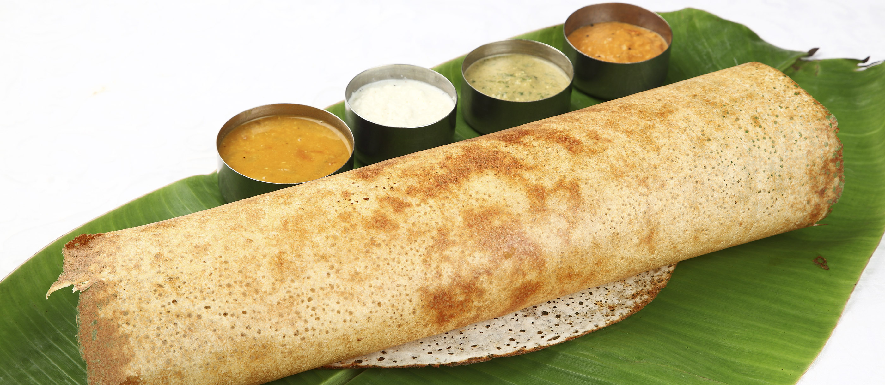
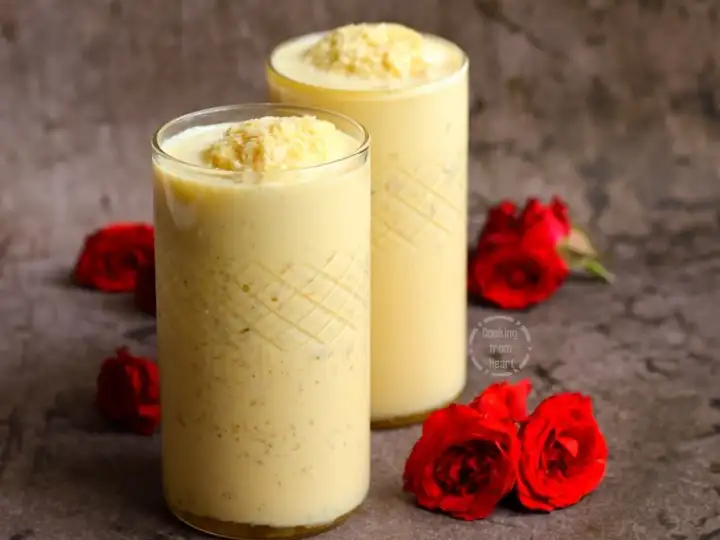
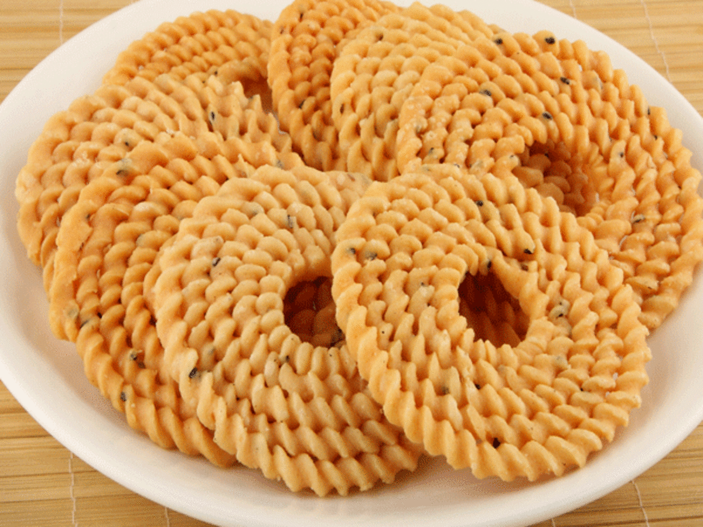
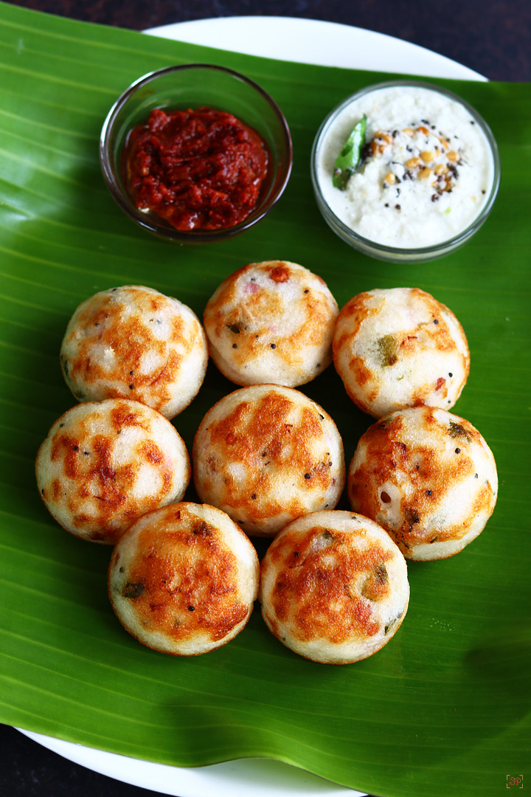
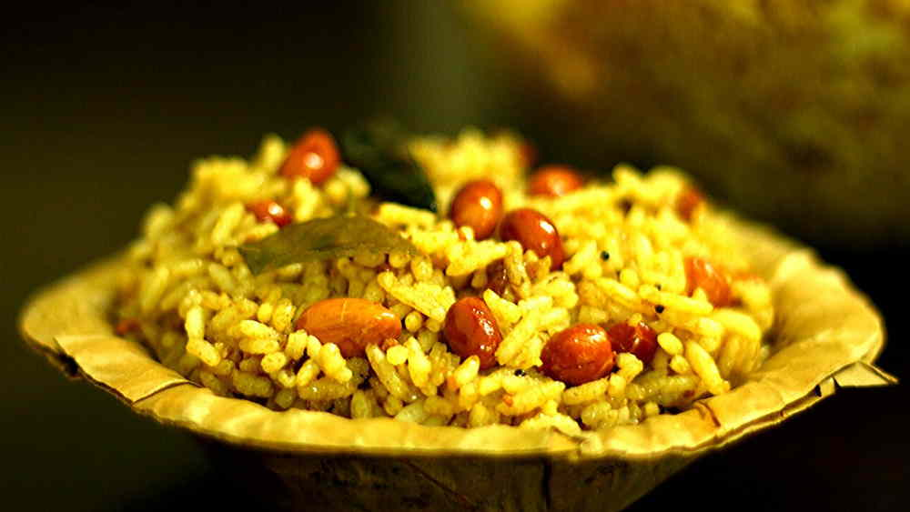
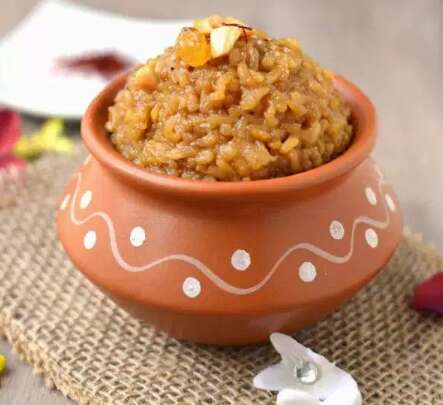
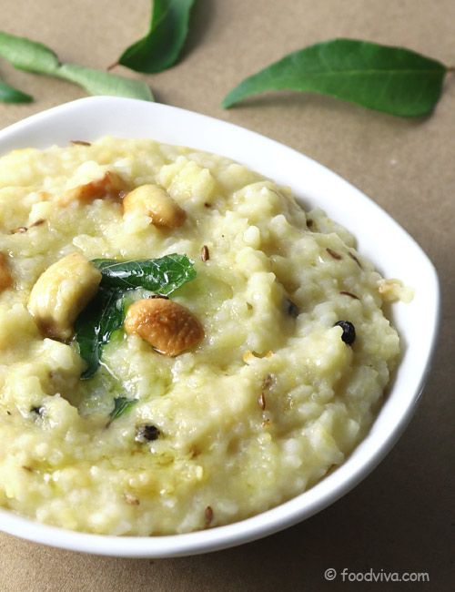

Recommended Food
Dosa

A dosa is a thin savory crepe in South Indian cuisine made from a fermented batter of ground black lentils and rice. Dosas are served hot, often with chutney and sambar. Dosas are popular in South Asia.Dosa can be stuffed with fillings of vegetables and sauces to make a quick meal. They are typically served with a vegetarian side dish which varies according to regional and personal preferences. Common side items are Sambar,Chutney,Idli podi or milagaipodi: a lentil powder with spices and sometimes desiccated coconut, mixed with sesame oil or groundnut oil or ghee and Indian pickles
Filter Coffee

Indian filter coffee is a coffee drink made by mixing hot milk and sugar with the infusion obtained by percolation brewing of finely ground coffee powder with chicory in a traditional Indian filter. It has been described as "hot, strong, sweet and topped with bubbly froth" and is known as filter kaapi in India.Filter Coffee can be served along with dosa,idly,vada it is mostly served along with the breakfast.
Famous place : Kumbakonam
Chettinad Chicken
Chicken Chettinad or Chettinad chicken is a classic Indian recipe, from the cuisine of Chettinad, Tamil Nadu. It consists of chicken marinated in yogurt, turmeric and a paste of red chillies, kalpasi, coconut, poppy seeds, coriander seeds, cumin seeds, fennel seeds, black pepper, ground nuts, onions, garlic and sesame oil. It is served hot and garnished with coriander leaves, accompanied with boiled rice or paratha.
Jigarthanda

Jigarthanda is a cold beverage from the South Indian city Madurai. Originally introduced by Rowther Muslims. It translates to "cold liver" ("jigar" means "liver" in Persian, "thanda" means "cold") in English, implying that the drink’s cooling effect will felt right down to one’s liver. It is generally prepared and served at roadside stalls as a refreshment during the Indian summer. The basic ingredients include milk, almond gum, sarsaparilla root syrup, sugar and ice cream.
Famous place : Madurai
Murukku

Murukku is a savoury, crunchy snack originating from the Indian subcontinent. The name murukku derives from the Tamil word for "twisted", which refers to its shape. In India, murukku is especially common in the states of Andhra Pradesh, Odisha, Tamil Nadu, Karnataka, and Kerala.
Mutton gravy

Mutton curry is a dish that is prepared from goat meat. Mutton curry was originally prepared putting all the ingredients together in a earthen pot and slow cooking the whole curry by wood fire on a clay oven. Mutton curry is generally served with rice or with Indian breads, such as naan or parotta. The dish can also be served with ragi, a cereal.
Paniyaram

Paniyaram is an Indian dish made by steaming batter using a mould. The batter is made of black lentils and rice and is similar in composition to the batter used to make idli and dosa. The dish can also be made spicy or sweet with chillies or jaggery respectively. Paniyaram is made on a special pan that comes with multiple small indentations.
Puliyodharai

Puliyodarai or simply Tamarind Rice, is a common and traditional rice preparation in the South Indian states of Andhra Pradesh, Telangana, Karnataka, Kerala and Tamil Nadu. Puli means 'tangy' or 'sour' in South Indian languages, referring to the characterizing use of tamarind as one of the main ingredients.
Parrupu Payasam

Payasam, is a pudding/porridge popular in the Indian subcontinent, usually made by boiling milk, sugar or jaggery, and Dhal. It can be additionally flavored with dried fruits, nuts, cardamom and saffron.
Ragi Koozh
Koozh is the Tamil name for a porridge made from millet. It is one of the traditional food in villages of Tamil Nadu. In Tamil Nadu and other places, koozh is consumed as breakfast or lunch. Koozh is made from Kezhvaragu or Cumbu flour and broken rice (called noiyee in Tamil) in a clay pot. Koozh is a vegetarian recipe though there are non-vegetarian koozh made from fish, crab and chicken, it is commonly consumed by the villagers of Tamil Nadu.
Rasam
Rasam, a soup of spices, is a traditional South Indian food. It is traditionally prepared using tamarind juice as a base, with the addition of Indian sesame oil, turmeric, tomato, chili pepper, pepper, garlic, cumin, curry leaves, mustard, coriander, asafoetida, sea salt, and water.
Sugarcane Juice
Sugarcane juice is the liquid extracted from pressed sugarcane. It is consumed as a beverage in many places, especially where sugarcane is commercially grown, such as Southeast Asia, the Indian subcontinent, North Africa, and Latin America. Sugarcane juice is obtained by crushing peeled sugar cane in a mill.
Sweet pongal

Sweet Pongal is a delicious, yummy dish made by cooking rice & moong dal in jaggery syrup, milk, water and then flavored with ghee and cashews. Sweet Pongal is also called Sakkarai Pongal commonly made during Pongal Festival. Sakkarai Pongal is made traditionally during Pongal festival or Makar Sankaranti as the first meal with the first harvested rice of the year. Pongal is made in the east direction facing Sun which symbolizes thanks giving & dedication of the first meal from the harvest to Sun God for a bountiful harvest.
Ven Pongal

Pongal is the popular South-Indian dish made with rice or mong-dal, either too sweet or savoury dish. Ven pongal or kaara pongal is the name given to the savoury version,which is tempered with ghee,curry leaves,black pepper,ginger,cumin and hing. This super flavourful and delicious dish is offerred to GODS - deities as naivedyam not only in south indian homes but also in temples during regular pooja,auspicious days and festivals.
About Us
Welcome to Tamilnadu Tales!
Your window to the soul of Tamilnadu's enchanting tourist places. Explore with us as we showcase the beauty, history, and charm of each destination, creating a visual feast for the travel enthusiast in you.